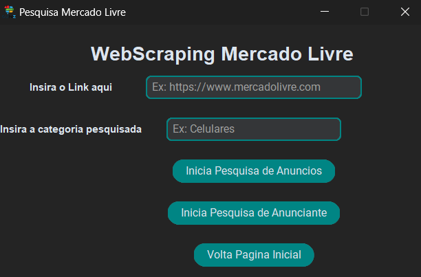
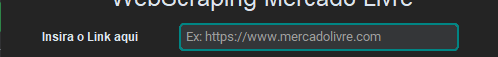
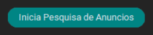
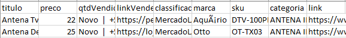

Sobre o Aplicativo
Este projeto foi feito para realizar a coleta de dados de anuncios e anunciantes dos principais Ecommerces do Brasil que são Mercado Livre, Amazon e Shopee. No momento temos apenas a pagina do Mercado Livre funcionando.
Como baixar e instalar(usar):
Baixar arquivos
Para baixar o aplicativo você deve seguir os seguintes passos:
-
Clique aqui para baixar o Aplicativo o sistema estara dentro de um arquivo .zip/rar que você deve descompactar para conseguir usar (Não é necessário instalar).
-
Para executar o aplicativo você deve abrir a pasta do aplicatico e procurar pelo executável WebScraping.exe que é este aqui: , clicar duas vezes e o aplicativo esta pronto para usar, caso tenha duvidas basta ler a documentação com o passo a passo de como utilizar e realizar a pesquisa.
Imagens do Aplicativo
As telas são divididas em uma tela principal, uma tela para cada tipo de pesquisa e uma tela de help com informações do App:
Tela Inicial:
Tela Sobre:

Tela Pesquisa Mercado Livre:

Tela Pesquisa Amazon:
Está em construção!!
Modo de usar o aplicativo
Para usar o aplicativo você deve escolher primeiramente qual pesquisa de ecommerce vai fazer. Lembrando que os arquivos gerados nessa pesquisa vai estar dentro da pasta mãe do aplicativo.
Pesquisa Mercado Livre
Pesquisa de Anúncios
Para iniciar a pesquisa de anúncios você deve seguir os passos abaixo.
-
Você deve ter um link do quantos anúncios pretende fazer o primeiro mapeamento, esse link deve ser da página de anúncios igual a página abaixo:
*Imagen Ilustrativa
Está página contém varios anúncios então a primeira etapa é fazer esta pesquisa e coletar este link que esta entre vermelho (Deve ser o link da sua pesquisa e não igual a imagem)
-
O próximo passo é inserir esse link no local correspondente a pesquisa no aplicativo, na imagem a seguir mostra o local correto:

-
Após inserido o link você deve colocar a qual categoria o produto pesquisado pertence. Exemplo: SMARTPHONE para uma pesquisa sobre celulares. Na imagem a seguir mostra o local onde deve ser escrito a categoria:

-
Feito os passos anteriores basta clicar no botão de Inicia Pesquisa de Anuncios para iniciar a pesquisa dos anúncios em todas as páginas. Botão na foto a seguir:

Com isso ira iniciar a pesquisa e quando terminar vai gerar um CVS com o nome de pesquisaAnunciosMercadoLivre.csv com os anuncios coletados e a categoria no formato: link;categoria
Pesquisa Anunciante
Para iniciar a pesquisa de anunciantes você deve seguir o passo a passo da pesquisa de anuncios que vai gerar um arquivo CSV e com este arquivo gerado vai ser realizada a pesquisa de cada pagina de anúncio que foi coletado no processo anterior.
Essa pesquisa vai gerar um CSV com as seguintes colunas coletadas da página: titulo;preco;qtdVendida;linkVendedor;classificacaoVendedor;marca;sku;categoria;link. Com essas informações é possivel gerar análise de como sua marca está no ecommerce
-
Para inicar a pesquisa de anunciantes você deve checar a existência do arquivo pesquisaAnunciosMercadoLivre.csv e caso ele exista e esteja correto basta clicar no botão Inicia Pesquisa de Anunciante para dar inicio a pesquisa da pagina. A foto a seguir mostra qual botão deve ser clicado:

Página exemplo do que é mapeado:
 Este é um exemplo da página que vai ser mapeada na pesquisa (Imagem Ilustrativa).
Este é um exemplo da página que vai ser mapeada na pesquisa (Imagem Ilustrativa).Exemplo do CSV gerado na Pesquisa de Anunciante:

Este é um exemplo de como vai ser o CSV depois de gerado(Imagem Ilustrativa).
Como você pode verificar na imagem acima, é importante fazer uma limpeza nos dados por conta de alguns dados estarem preenchidos de forma incorreta no site do Mercado Livre, como por exemplo algumas pontuações fora de ordem ou erradas principalmente nas colunas MARCA E SKU, então pode ser necessario uma limpeza e validação dos dados para que não ocorra problemas na análise.